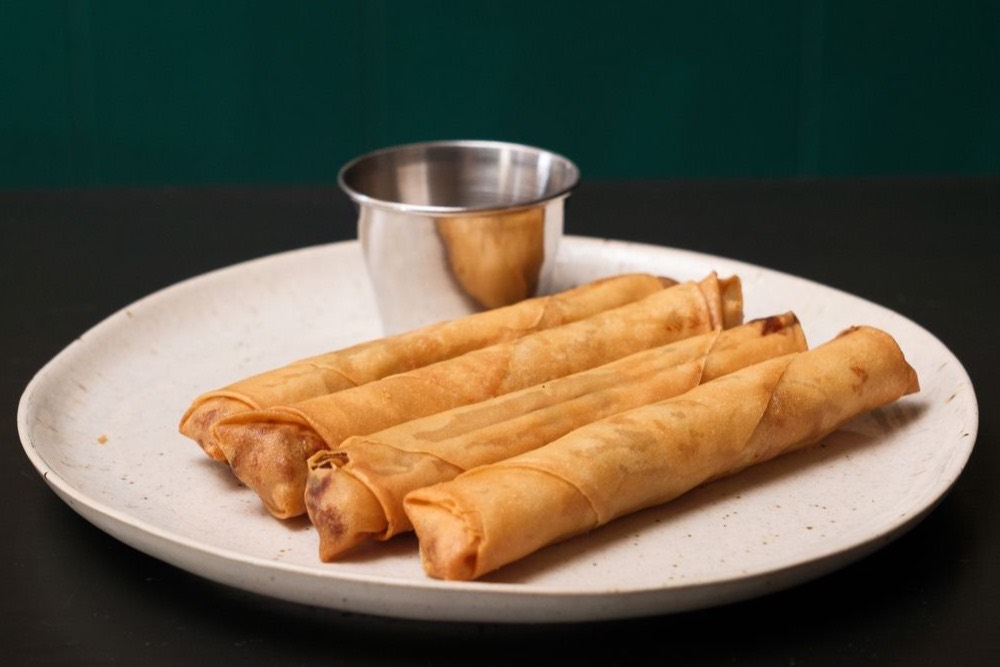

Lumpiang Shanghai (Pork Spring Rolls)
By Sam · Published July 3, 2026 · Updated October 2, 2026

Research-based recipe guide. Times are estimates; check tenderness and doneness as you cook.
Thin wrappers around a finely chopped pork filling. Make one cooked test portion before wrapping the batch, and use the filling temperature—not wrapper color alone—to check doneness.
Ingredients
- 500 g ground pork
- 1 carrot, finely minced
- 1 small onion, finely minced
- 3 cloves garlic, minced
- 1 egg
- 2 tbsp soy sauce
- Salt, up to 1 tsp, to taste
- 1/2 tsp ground black pepper
- 25–30 thin lumpia or spring roll wrappers
- Oil for deep-frying
- Sweet chili sauce or spiced vinegar, to serve
Instructions
- Combine pork, carrot, onion, garlic, egg, soy sauce, pepper and part of the salt. Fry a small portion fully before tasting; adjust the remaining mixture if needed.
- Keep unused wrappers covered so they do not dry out. Put about one level tablespoon of filling near one edge, leaving room to fold the sides.
- Fold the sides in, roll firmly into a thin log and seal the final edge with water. Keep the rolls similar in thickness.
- Heat frying oil to about 170°C / 340°F. Fry a few rolls at a time, turning as needed. A thin fresh roll may take about 4–5 minutes; check the pork filling reaches 71°C / 160°F.
- Drain on a rack and serve with dipping sauce. For frozen rolls, allow extra cooking time and check the center; do not assume one extra minute is always sufficient.
Make the filling fit the wrapper
Minced vegetables spread more evenly than large chunks, so the roll can stay thin. Thicker egg-roll wrappers and delicate lumpia wrappers fry differently; check the packet before choosing a replacement. Keep the filling cold while working and return the unused mixture to the refrigerator between batches.
A cooked test portion lets you judge the combined salt from soy sauce and added salt. Never taste raw pork mixture. If the test is too salty, adding more wrapper will not fix the seasoning inside each bite; adjust the mixture before rolling.
When the wrapper browns too quickly
Check the oil temperature and the roll thickness. A dark wrapper can hide an undercooked center. Reduce the heat for the next batch and use a thermometer in a test roll. Leave space between rolls so you can turn and remove them safely.
For a gathering, assemble before guests arrive and fry near serving time. Keep sauces in separate bowls and tell diners about pork, egg, soy and possible wheat in the wrappers. If you change the filling to chicken, use the poultry temperature guidance rather than the pork temperature above. Pair with pancit canton or use the shared-meal checklist.
Store and reheat safely
Chill within two hours; one hour above 32°C / 90°F. Refrigerate leftovers for 3–4 days. Reheat to 74°C / 165°F.
Frequently Asked Questions
Can I freeze the assembled rolls?
Yes. Freeze in one layer, then pack together once firm. Follow the wrapper and filling storage guidance and check doneness when frying from frozen.
Why does a roll open in the oil?
Check for a dry or poorly sealed edge and too much filling. Make a smaller test roll before changing the whole batch.
Sources and recipe context
Lalaine Manalo: Lumpiang Shanghai provides a published preparation to compare with this editorial guide; variations and quantities differ. Safety references are linked above. Send a correction.
Gabay na batay sa pagsasaliksik. Tantiya ang oras; suriin ang lambot at pagkaluto.
Manipis na balot na may palamang baboy at pinong gulay. Magluto muna ng maliit na pangtikim bago balutin ang lahat, at temperatura ng palaman—hindi kulay lamang—ang suriin.
Mga sangkap
- 500 g giniling na baboy
- 1 karot, pinong tinadtad
- 1 maliit na sibuyas, pinong tinadtad
- 3 butil ng bawang, tinadtad
- 1 itlog
- 2 kutsarang toyo
- Asin, hanggang 1 kutsarita, ayon sa lasa
- 1/2 kutsaritang paminta
- 25–30 manipis na lumpia wrapper
- Mantika para sa pagprito
- Sweet chili sauce o sukang may pampalasa, panghain
Paraan ng pagluto
- Paghaluin ang baboy, karot, sibuyas, bawang, itlog, toyo, paminta, at bahagi ng asin. Lutuin nang lubos ang maliit na bahagi bago tikman; ayusin ang natitirang timpla kung kailangan.
- Takpan ang hindi pa ginagamit na balot para hindi matuyo. Maglagay ng mga isang pantay na kutsarang palaman malapit sa gilid, may puwang para matupi ang magkabilang panig.
- Itupi ang magkabilang panig, irolyo nang mahigpit at manipis, at dikitan ang dulo gamit ang tubig. Pantayin ang kapal ng mga rolyo.
- Painitin ang mantika sa mga 170°C / 340°F. Magprito nang paunti-unti at baligtarin kung kailangan. Maaaring mga 4–5 minuto ang manipis na sariwang rolyo; dapat umabot sa 71°C / 160°F ang palamang baboy.
- Patuluin sa rack at ihain kasama ng sawsawan. Kung frozen, dagdagan ang oras at suriin ang gitna; huwag ipagpalagay na sapat palagi ang isang dagdag na minuto.
Ibagay ang palaman sa balot
Mas pantay ang pinong gulay kaysa malalaking hiwa, kaya nananatiling manipis ang rolyo. Magkaiba ang pagluto ng makapal na egg-roll wrapper at manipis na lumpia wrapper; basahin ang pakete bago magpalit. Panatilihing malamig ang palaman at ibalik sa refrigerator ang hindi ginagamit sa pagitan ng mga batch.
Sa lutong pangtikim makikita ang pinagsamang alat ng toyo at asin. Huwag tikman ang hilaw na palamang baboy. Hindi maaayos ng dagdag na balot ang sobrang alat sa bawat kagat; ayusin ang halo bago magbalot.
Kapag mabilis pumula ang balot
Suriin ang temperatura ng mantika at kapal ng rolyo. Maaaring hilaw ang gitna kahit maitim na ang balot. Hinaan para sa susunod na batch at gumamit ng thermometer sa isang rolyo. Mag-iwan ng puwang para ligtas baligtarin at alisin.
Para sa salu-salo, magbalot bago dumating ang bisita at magprito malapit sa paghain. Ihiwalay ang sawsawan at ipaalam ang baboy, itlog, toyo, at posibleng trigo sa balot. Kung manok ang palaman, sundin ang ligtas na temperatura para sa poultry, hindi sa baboy. Ipares sa pancit canton o tingnan ang checklist ng salu-salo.
Ligtas na pagtatago at pag-init
I-refrigerate sa loob ng dalawang oras; isang oras kapag higit sa 32°C / 90°F. Itago ang tira nang 3–4 araw. Initin sa 74°C / 165°F.
Mga madalas na tanong
Maaari bang i-freeze ang nabalot?
Oo. I-freeze sa isang patong, saka pagsamahin kapag matigas na. Sundin ang gabay sa pagtatago at suriin ang pagkaluto kapag frozen ang piniprito.
Bakit bumubuka habang piniprito?
Suriin kung tuyo o mahina ang pagkakadikit at kung sobra ang palaman. Gumawa ng mas maliit na pangsubok bago baguhin ang lahat.
Mga sanggunian
May nailathalang paraan ang Lalaine Manalo: Lumpiang Shanghai na maaaring ihambing sa gabay na ito; magkakaiba ang bersyon at dami. Naka-link sa itaas ang sanggunian sa kaligtasan. Magpadala ng pagwawasto.